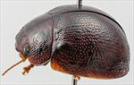
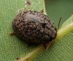
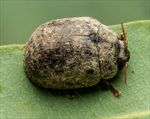
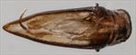
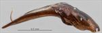
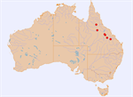

Click on images to enlarge
{kind=link}

Male, Hughenden, Northern Queensland
{kind=link}

Male, Belyando Crossing, Central Queensland
{kind=link}

Female, Hughenden, Northern Queensland
{kind=link}

Aedeagus, dorsal view (Hughenden, Northern Queensland)
{kind=link}

Aedeagus, lateral view (Hughenden, Northern Queensland)
{kind=link}

Distribution
Name
Trachymela sp. Ta92
Reference specimen
2003-232, Blackdown Tablelands, Central Queensland.
Adult Description
Length: ♂ 5.2–6.3 mm (n=12), ♀ 5.6–7.2 mm (n=11).
Colouration:
- Head: Brown with clypeus and a broad band running posteriorly from fronto-clypeal suture sometimes fully, but more often, partially black, small black patch is rarely present behind antennal insertions close to eye, very rarely is there no black colouring, labrum yellowish-brown, mandibles dark-brown with black tips; antennae uniformly light-brown.
- Pronotum: Brown, concolorous with head, a thin to moderately broad black line extends from anterior edge just behind inside edge of each eye towards but usually not quite reaching posterior edge, usually with a short line segment extending from near its middle towards centre of disc, anterior edge of pronotum between these lines is often black and sometimes a thinner black line extends from anterior to posterior edge along centre, a moderately large, round, and black area present in centre of foveal depression.
- Scutellum: Black, rarely very dark-brown.
- Elytra: Brown, concolorous with pronotum, punctures are concolorous with interstices, surface is scattered with moderately sized (4–6 pd) slightly elevated and often longitudinally extended black verrucae, many of them, especially in posterior half, are arranged as longitudinal series between rows of punctures, a relatively large elevated black area is situated along discal margin a little anterior to middle, a short, black ridge extends from anterior margin, halfway between scutellum and humeral callus, continuing the black line on pronotum, humeral callus black.
- Venter & Legs: Uniformly mid-brown with legs sometimes slightly darker, inside surface of elytral epipleura brown, sometimes darker away from outer edge.
- Cuticular Wax: A relatively light and fairly even sprinkling of light brown, overlain with short longitudinal streaks of greyish-white wax between the verrucae that can produce a pattern of a series of longitudinal dashed lines on the elytral disc though these may be very faint and barely discernable in some specimens; frequently the wax is partially or almost fully eroded.
Morphology:
- Head: Punctures moderately large (pd ≈ 1.5–2× ef), clearly impressed and closely but slightly unevenly distributed, adjacent punctures sometimes touching. Antennae short (AL/BL: ♂ 31–34%, ♀ 29–30%), filiform.
- Pronotum: Almost evenly curved transversely, foveal depression absent or very indistinct, a prominent, slightly elevated round pustule which is less densely punctured than surrounding area situated behind centre of eye midway between anterior and posterior edges, discal area with surface relatively smooth, often nitid, puncturation clearly impressed with punctures similar in size to those on head, evenly to slightly unevenly and moderately densely to more sparsely distributed (spacing ≈ 2–3 pd), sometimes noticeably less dense on a patch on each margin of discal area, becoming much coarser towards lateral margins. Front margins join lateral margins in a smoothly rounded right-angle, with lateral margin curving almost imperceptibly and smoothly towards rear margin with the curvature becoming greater in posterior third, broadest about 2/3 of distance to posterio-lateral angle.
- Scutellum: Smooth or rough textured, punctured or unpunctured.
- Elytra: Surface evenly curved, punctures surrounded by convex interstices, closely spaced, clearly impressed and quite evenly distributed, interstices slightly thickened in places to form small or moderate sized, very slightly elevated verrucae with neighbouring ones sometimes merging to form larger elevated surfaces, verrucae are more isolated, elevated and prominent in posterior half where they tend to be elongate, situated between adjacent “rows” of punctures and thus often arranged into longitudinal rows, posterior third of elytral suture carinate, posterior section of marginal area very weakly concave, surface continuous or rarely very slightly discontinuous under humeral callus. Vertical extension of epipleura moderate (HCE/PW = 0.34–0.38).
- Venter: Prosternal process almost parallel or narrowing anteriorly, lightly closed anteriorly, prosternal process and mesoventrite devoid of long setae, a single long seta present on anterior, median and posterior trochanters; front edge of metaventrite beveled, flat; inner edge of posterior of epipleurae lacking setae.
Male Genitalia (Aedeagus):
- Dimensions: Short (LPE/BL = 23–27%), lanceolate.
- Dorsal view: Shaft widest at rear with sides initially converging uniformly to just behind level of ostium, from where rate of convergence increases fractionally, dorsal surface membranous with a very faint dorso-median channel present, ostium very small, tip triangular.
- Lateral view: Shaft sharply curved at 30° at about 40% of length from basal sulcus, lower edge towards apex from curve quite straight until apex, dorsal surface parallel to ventral surface until close to tip, tip straight, neither deflexed nor reflexed.
Immature Stages
- Eggs: Pale orange, lightly punctured, 1.6 × 0.62 mm, batch size about 26.
- Larvae: Unknown.
Similar species
- Ta214: A very similar species, found on the same hosts. It may be distinguished from Ta92 by the colour of the legs, which are of a lighter shade than most of the rest of the ventral surface.
- Ta29: This species differs from Ta92 by its lack of black, longitudinal bands on the prothorax and its elytral verrucae being noticeably more elevated. Especially in the posterior third of elytra, the verrucae of Ta92 are invariably longer than wide and they are barely elevated, appearing like short, black streaks between adjacent rows of punctures, while those of Ta29 appear as round pimples.
Notes
- Taxonomy: Member of the triangulum group of species, distinguished by their thin, lanceolate aedeagus. The size distributions of males and females overlap more broadly than is typical for other triangulum-group species.
- Distribution & Abundance: Found in central and northern Queensland.
- Host Associations: Recorded feeding on ghost gums: Blakella tessellaris, B. dallachiana, and B. gilbertensis.
- Morphological Variation: Though not enough specimens are available to draw definitive conclusions, specimens collected from B. tessellaris tend to be larger than those from other hosts, while the aedeagus LPE/BL value from the single male specimen from B. tessellaris is a little above the value expected from other specimens as well as marginally less sharp at the tip. The tessellaris specimens have the scutellum more heavily and consistently punctured. In almost all other respects the specimens are morphologically very similar, and it is unlikely that more than one species is included in this grouping.
Copyright © 2026. All rights reserved.